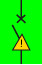
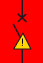

Powercenter Devices
7KN Powercenter 1000
7KN Powercenter 1000 data transceivers collect the data for communication and measurement capable 5SL6 COM miniature circuit breakers, 5SV6 COM AFDD/MCB, 3NA COM Fuse, 5ST3 COM auxiliary switches and fault signal contacts. They communicate wirelessly within a power distribution board or distribution board, each with up to 24 circuit protection devices. The data is accessed via Bluetooth with mobile devices on-site or transmitted to higher-level systems through Modbus TCP.
Key Features of 7KN Powercenter 1000 Data Transceiver
- Comprehensive data acquisition from communication and measuring capable circuit protection devices. Provides high transparency in the branch circuit and easy derivation of measures.
- Connection of up to 24 end devices and caching of selected data ensuring comprehensive data availability.
- Integrated Bluetooth interface enabling mobile data readout on-site via the SENTRON Powerconfig mobile app.
- Integrated MODBUS TCP interface:
Enables connection to SENTRON Powerconfig configuration software and SENTRON Powermanager power monitoring software for easy visualization and evaluation of data.
Connection to cloud solutions (InsightsHub formerly MindSpehere) for data analysis with 7KN Powercenter 3000 or with other cloud gateways. - Compact design ensures low space requirements in the distribution board (1MW).
Key features of 5SL6 COM MCB
- Data acquisition right down to the branch circuit. High transparency concerning energy consumption and system state.
- Protection, communication and measuring functions in one modular width. Reduced space requirement with increased functionality.
- Early warnings by means of set limit values. Increased system availability by avoiding undesired shut-downs.
- Differentiation of tripping causes (e.g. short circuit, overload). More efficient, targeted troubleshooting.
- Wireless communication interface. Reliable wireless data transmission to the 7KN Powercenter 1000.
Key features of 5SV6 COM AFDD/MCB
- Data acquisition right down to the branch circuit. High transparency concerning energy consumption and system state.
- Protection, communication and measuring functions in one modular width. Reduced space requirement with increased functionality.
- Early warnings by means of set limit values. Increased system availability by avoiding undesired shut-downs.
- Differentiation of tripping causes (e.g. short circuit, overload, and arc fault). More efficient, targeted troubleshooting. Differentiation of serial and parallel arcs.
- Wireless communication interface. Reliable wireless data transmission to the 7KN Powercenter 1000.
Key Features of 5ST3 COM auxiliary switches/fault signal contacts (5ST3 COM HS/FC)
- Integrated communication and measuring function. Expansion of functionality of the standard electromechanical circuit protection device. Reliable wireless data transmission to the 7KN Powercenter 1000 data transceiver.
- Integrated auxiliary/fault signal evaluation. Signal of switching position and tripping in the event of a fault. Differentiation between conscious disconnection and tripping caused due to faults and temperature measurement.
- Integrated measuring of operating cycles and tripping operations. Information on the service life of connected devices.
Colored Background of the ASFC Molded-Case Circuit Breaker Symbol for Designating the Status
Color | Message status | Meaning |
Green | Green | No alarm present |
Red | Red | At least one alarm present |
State Symbol with Guide Frame | Description of the State |
The circuit breaker status is unknown. | |
The circuit breaker is in OFF position. | |
The circuit breaker is in ON position. | |
The circuit breaker is tripped overtime. | |
 | The circuit breaker is tripped. |
The circuit breaker is in OFF position with alarm. | |
The circuit breaker is in ON position with alarm. | |
The circuit breaker status is unknown with alarm. | |
The circuit breaker is tripped overtime with alarm. | |
 | The circuit breaker is tripped with alarm. |